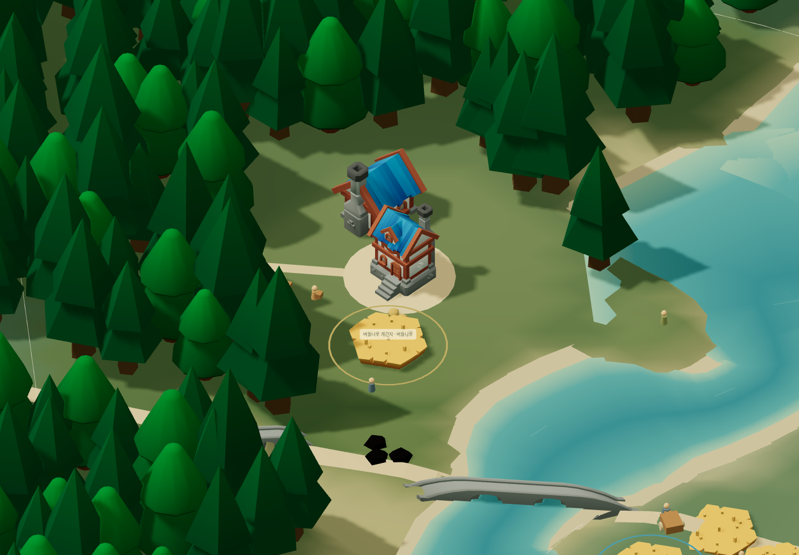
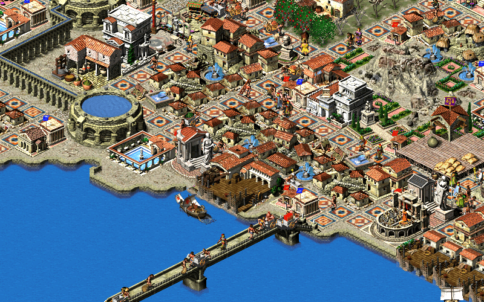
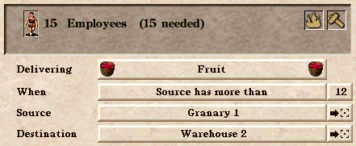
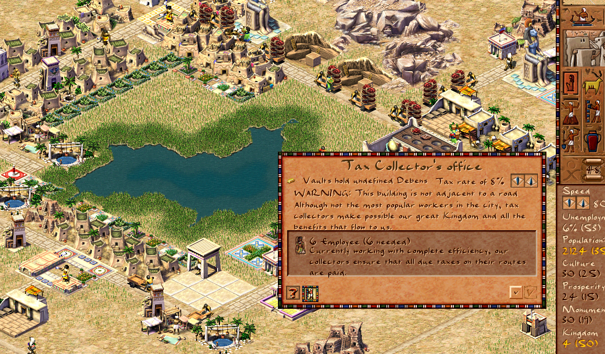

평소의 방향
겨울 대비, 교역 중심 성장, 주거 확장, 보호 협정. 정한 범위 안에서 주민과 지도자가 계속 판단합니다.
CAESAR → OUR VILLAGE · 2026.11.01
집을 어디에 지을지, 누가 일할지는 마을이 알아서.
우리는 무엇을 우선하고, 누구와 손잡고, 어떤 위험을 감수할지.
실제 게임은 바다로 둘러싸인 대륙의 서쪽 초가 마을에서 시작합니다. 첫 목표와 세 가지 정치적 선택, 건물 클릭·소유 깃발·건축 기술을 적용했습니다. 게임에서 확인 ↗ · 현재 규칙과 실제 화면 ↗. 아래 주민 이름과 숫자는 계속 설명용 시안입니다.
CORE LOOP · 자동 생활과 전략적 개입
건물 배치·건설·일 배정·운반은 자동입니다. 평소에는 마을의 방향을 정하고, 위기가 오면 한시적으로 대응합니다. 건물과 주민을 눌러 보는 창은 선택의 근거를 알아보는 곳입니다.
예시 · 겨울을 앞둔 작은 마을
방향을 고르면 얻는 것과 감수할 것을 볼 수 있어요.
선택 전 미리보기 · 실제 게임은 변경되지 않아요.
겨울 대비, 교역 중심 성장, 주거 확장, 보호 협정. 정한 범위 안에서 주민과 지도자가 계속 판단합니다.
수레 호위, 출발 연기, 방어 집중, 철수. 투입 한도와 끝나는 조건을 정하고 현장 실행은 맡깁니다.
왜 공사가 늦어졌는지, 곡물 수레가 도착했는지, 얼마를 조공으로 보냈는지 실제 변화로 확인합니다.
첫겨울의 자급·교환·보호는 현재 게임에 있는 선택입니다. 위 예시는 설명용이며 실제 진행·결과를 계산하지 않습니다. 기간 제한 대응·호위·철수는 추가 기획입니다. 자동으로 맡길 일, 전략·전술의 비용과 개발 순서 ↗
01 · 판단을 돕는 관찰 창
아래는 실제 게임을 촬영한 지도에 새 UI를 얹은 클릭 가능한 시안입니다. 주민 이름·수치·동선은 설명용 예시이며, 아직 게임에 적용되지 않았습니다.

선택적 관찰 밭 → 하린 → 집 → 먹거리 흐름
일을 시키는 절차 없이, 궁금할 때만 눌러 살펴봅니다.
02 · 실제 화면 조사
시저 III를 보존한 Julius, 기능을 확장한 Augustus, 파라오를 재구현한 Akhenaten의 공개 자료를 확인했습니다. 아래는 실제 프로젝트 스크린샷이며, 직접 플레이한 평가는 아닙니다.

실제 참고 화면 · 클릭하면 크게 보기 ↗건물을 누르면, 그 건물의 사정이 나온다.
확인한 사실 농장 정보창은 생산 진행률, 필요한 일꾼과 현재 일꾼, 길 연결·생산 중단 여부를 보여줍니다. 운반 인물 정보에는 이름·직업·짐과 출발지·목적지가 연결됩니다.
우리에게 적용 “농장입니다”에서 끝내지 않고 “하린이 곡물 3개를 창고로 옮기는 중”까지 보여줍니다. 주민의 집과 일터는 서로 눌러 이동합니다.
Julius 소개 · 농장 정보 코드 · 운반 인물 정보 코드
이미지: Julius 저장소 res/vita/bg.png. 공개 화면만으로 모든 인구가 고유한 평생 기록을 가진다고 해석하지 않습니다.

실제 참고 화면 · 매뉴얼 PDF 10쪽 ↗물건의 출발지와 목적지를 알려준다.
확인한 사실 운송소 창에서 운반 품목·조건·출발지·목적지를 확인하고 해당 건물로 화면을 옮길 수 있습니다. 이동 경로 미리보기와 창고·생산 상태를 보는 지도 표시도 제공합니다.
우리에게 적용 밭 → 운반 중 → 마을 창고 → 식사를 그림으로 연결합니다. “수확했지만 아직 창고에 도착하지 않은 양”을 나눠 보여줍니다. 길은 선택한 대상 하나의 경로만 켭니다.
Augustus 소개 · 4.0 매뉴얼
PDF 6쪽: 경로 미리보기 / 10쪽: 운송소 / 11–12쪽: 창고 주문 / 17쪽: 지도 표시. 이 기능들은 시저 III 원판이 아닌 Augustus의 개선·추가 기능입니다.

실제 참고 화면 · 건물 정보창 ↗건물의 용도와 문제를 한곳에 둔다.
확인한 사실 공개된 세금 징수소 정보창은 역할 설명, 직원 수와 함께 “이 건물이 길에 닿아 있지 않다”는 경고를 보여줍니다.
우리에게 적용 문제는 쉬운 말 한 줄과 현장 이동 버튼으로 바꿉니다. “건설 자재 부족” 대신 “집을 지을 나무가 8개 모자라요 → 나무 옮기는 곳 보기”. 같은 창에서 정상·경고 문구가 서로 모순되지 않게 합니다.
Akhenaten 소개 · 공식 프로젝트 스크린샷 목록
이미지: docs/images/tax-collector-window.png. 원작 파라오의 커뮤니티 재구현이며, 2023년작 Pharaoh: A New Era와 다른 프로젝트입니다.
참고 이미지의 권리는 각 권리자에게 있습니다. 화면 분석을 위해 출처와 함께 인용했으며, 우리 게임의 그래픽 에셋으로 사용하지 않습니다. 매뉴얼 쪽수는 PDF 뷰어 기준입니다.
03 · 우리 게임 적용 계획
밭은 “먹을 것을 기르는 곳”. 집은 “주민이 잠자는 곳”. 그 아래에 지금 상태와 관련 주민을 둡니다.
누구인지, 어디 사는지, 지금 무엇을 들고 어디로 가는지. 카드를 열어도 작업은 자동입니다.
문제가 생긴 건물에 표시 하나. 누르면 이유와 관련 현장으로 이동. 모든 집 위에 경고를 띄우지 않습니다.
지금 보이는 사람 6개는 주민 12명의 개인 기록이 아니라 6개 작업조입니다. 건물별 일꾼·주택별 거주자 기록도 없습니다. 실제 주민 기록과 집·일터를 연결한 다음 카드를 만들어야 합니다. 없는 이름·가족·기억을 현재 정보처럼 채우지 않습니다.
| 누르는 대상 | 맨 먼저 보일 내용 | 바로 이어서 누를 곳 |
|---|---|---|
| 🌾 밭 | 먹을 것을 기르는 곳 · 일하는 주민 · 수확 / 운반 중 / 도착한 양 | 주민 카드 · 창고 |
| ⌂ 집 | 주민이 잠자는 곳 · 사는 사람 · 남는 잠자리 | 사는 사람의 카드 |
| ▣ 마을 창고 | 함께 쓰는 물건이 모이는 곳 · 들어옴 / 식사 / 나감 | 오는 짐 · 식량을 가져올 수레 |
| 🪚 작업장 | 나무와 돌을 더 잘 다듬는 곳 · 실제 생산 효과 | 관련 작업 현장 |
| ⚙ 방앗간 | 먹거리 생산과 보관을 돕는 곳 · 실제 생산·보관 효과 | 밭 · 창고 |
| 🤝 교역 시장 | 다른 마을과 물건을 주고받는 창구 · 상대 / 줄 것 / 받을 것 | 실제 계약 · 오고 있는 수레 |
| 🚶 주민 | 이름 · 지금 하는 일 · 가진 짐 · 집 · 일터 | 따라가기 · 집 보기 · 일터 보기 |
“마을 창고”는 기존 중앙 적재 장소를 선택하게 하는 제안입니다. 새 창고 건물이나 집마다 배달하는 체계를 추가한다는 뜻은 아닙니다. 현재 시장은 교역의 필수 조건이 아니므로, 설명만으로 필수 건물처럼 바꾸지 않습니다.
“몇 일분”은 현재 인구의 하루 식사량으로 나눈 값이며, 앞으로의 수확까지 보장하는 예측으로 쓰지 않습니다.
기존 첫겨울·교역·보호·정책을 연결합니다. 비용, 감수할 점, 자동 실행 상태와 실제 결과가 하나의 흐름으로 보여야 합니다.
현재 우선순위와 한도를 표시합니다. 건물·작업·운반의 실제 이유를 궁금할 때 찾아볼 수 있게 합니다.
실제 사건에 연결하고 투입 비용·종료 조건을 둡니다. 끝나면 원래 전략으로 돌아가게 합니다. 호위·철수 등을 한꺼번에 추가하지 않습니다.
실제 개인 기록과 집·일터를 연결합니다. 주민 카드 순회를 의무로 만들거나 전체 개인 모델 완성을 첫 전략 플레이의 선행 조건으로 두지 않습니다.
개입하지 않아도 마을이 살아가고, 선택 전에 비용과 대가를 이해하며, 선택 뒤에는 실제 자원·공사·교역·의존 관계의 차이를 볼 수 있어야 합니다. 건물·주민 카드는 그 이유를 두 번 이내의 클릭으로 확인하게 합니다. 기록과 실제 인원·재고는 서로 맞아야 합니다.